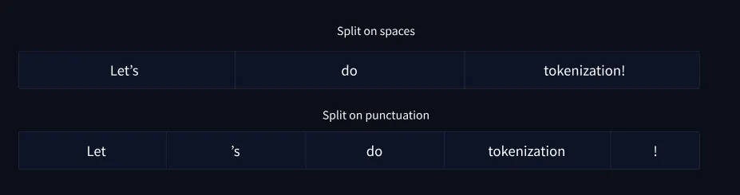
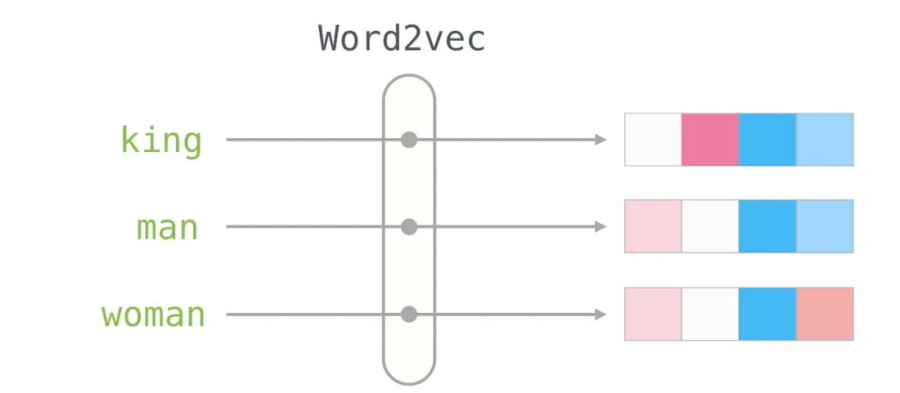

Large Language Models (LLMs) like ChatGPT, Gemini, or Claude generate text one piece at a time. They don't write full sentences in one go. Instead, they decide the next token, add it to the text, then repeat the process again and again until the response is complete.
But how do they decide what token comes next? The answer lies in a sequence of steps: tokenization, numerical representation, neural network processing, probability prediction, and finally sampling or selection. Let's go through each step in detail.
Step 1: Breaking Text Into Tokens
LLMs never work directly with plain words or sentences. They break down text into tokens.
A token is the smallest unit of text the model understands. Depending on the tokenizer, a token might be:
- A full word (dog)
- Part of a word (play → pla + y)
- Punctuation (. or ,)
- Special symbols (like <PAD> or <EOS> for padding and end-of-sequence)
This process is called tokenization.
example:
Sentence: "LLMs are smart"
Tokens: ["L", "L", "Ms", " are", " smart"]This step is important because it allows LLMs to handle all kinds of inputs consistently, including words they haven't seen before (by breaking them into smaller known parts).
Step 2: Mapping Tokens to Numbers
Once we have tokens, the model needs to work with them in numerical form. Each token in the vocabulary is mapped to a unique ID number.
Example:
"L" → 1234
"L" → 5678
"Ms" → 9123
"are" → 45
"smart"→ 678This mapping forms the vocabulary of the model. Modern LLMs have vocabularies with tens of thousands of tokens.
The IDs are then converted into embeddings, high dimensional vectors (arrays of numbers) that capture relationships between tokens. For example, embeddings for "king" and "queen" may be close in vector space, because they are semantically related.
Step 3: Processing With Transformer Neural Networks
Now the embeddings go into the heart of the LLM, the transformer architecture.
A transformer is made up of many layers. Each layer contains two key components:
- Self-Attention: This mechanism allows the model to look at all previous tokens and figure out which ones are important when predicting the next token.
- Example: In the sentence "The cat sat on the ___", the token "cat" is more important than "the" for predicting "mat".
2. Feedforward Neural Network: After attention, the information is passed through fully connected layers to refine the representation.
This process repeats across dozens or even hundreds of layers in large models. The deeper the network, the richer the understanding of context.
Step 4: Producing Probabilities for the Next Token
At the final layer, the model outputs a probability distribution over the entire vocabulary.
This is done using the softmax function, which turns raw scores (logits) into probabilities that add up to 1.
Example: If the input so far is "The capital of France is", the model might produce probabilities like:
- "Paris" → 0.95
- "London" → 0.02
- "Berlin" → 0.01
- "Madrid" → 0.01
- Everything else → near 0
This means the model thinks "Paris" is the most likely next token.